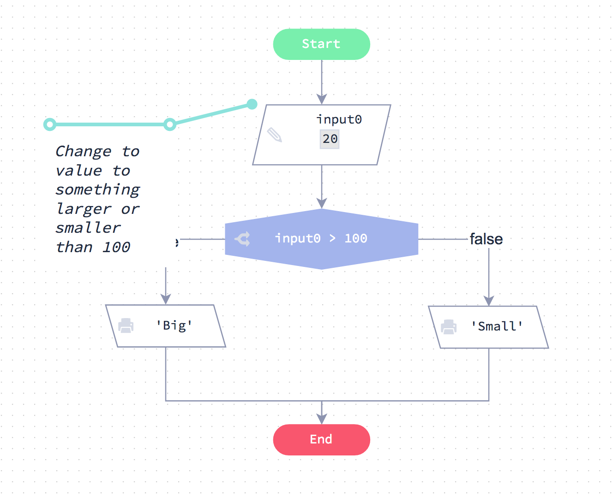

Expresiones numéricas y de cadena
1 . Expresiones numéricas y de cadena
¿Estás listo para comenzar a escribir código de verdad?
Te recomendamos que aprendas JavaScript ya que esto abre el mundo del desarrollo web. También puedes hacer el "lado del servidor" de desarrollo con JavaScript, esto se utiliza para cosas como la escritura de archivos y manejo de Base de Datos.
El mejor enfoque es trabajar a través del curso usando primero el lenguaje JavaScript. Una vez que hayas completado el curso usando JavaScript, te resultará mucho más fácil trabajar con tecnología web.
1 . 1 . Entradas y salidas
La forma en que se maneja las entradas y salidas en código es muy similar a los diagramas de flujo.
Haga clic en el botón de abajo para Ejecutar Código. Los resultados del programa aparecerán justo debajo del botón.
// Obtener la entrada desde la línea de comandos
var digit1 = 123 // prompt (mensaje)
var digit2 = 324 // prompt (mensaje)
var digit3 = 546 // prompt (mensaje)
// Las variables digit1, digit2 y digit3 ahora están siendo asignadas
// valores pasados al programa.
// Haga algo matemático
var num = digit1 * (digit2 + digit3)
// la variable num ahora contiene el resultado de la expresión matemática
// Imprimir algunos resultados (outputs)
console.log ('Nuestros resultados:')
console.log ('digit1 =' + digit1)
console.log ('digit2 =' + digit2)
console.log ('digit3 =' + digit3)
console.log ('num =' + num)
Inputs (Entradas)
Usted obtendrá un input (entrada) para su código usando la función promt(). JavaScript hace esto fácil, proporcionando acceso a los argumentos de línea de comandos como éste:
var digit1 = prompt("input 1")
var digit2 = prompt("input 2")
var digit3 = prompt("input 3")
Usted aprenderá más sobre cómo funciona ésto más adelante. Por ahora, ésto es suficiente para usted.
Outputs (Salidas)
Para emitir datos, utilice la función console.log () como se muestra a la izquierda. Ésto puede contener cualquier expresión JavaScript válida.
1 . 2 . Errores
A menudo cometerá errores al escribir código. Pronto se acostumbrará a ésto, lo importante es desarrollar la habilidad de aprender a entender los errores y luego arreglarlos (debugging o depuración).
Mire el código de abajo. Este código contiene un error de sintaxis simple.
Ahora presione el botón de abajo para ejecutar el código.
// Obtener inputs desde la línea de comandos
var digit1 = 123 // prompt
var digit2 = 324 // prompt
var digit3 = 546 // prompt
// Existe un error en ésta línea
var num = digit1 + digit4
//Output
console.log ('digit1 = ' + digit1)
console.log ('digit2 = ' + digit2)
console.log ('digit3 = ' + digit3)
console.log ('num = ' + num)
Cuando ejecute el código, verá aparecer un error
Entendiendo el error
El error parece bastante hostil. Sin embargo, si lee el error cuidadosamente y mira hacia atrás a través de su código, debería ser capaz de averiguar qué hacer para solucionarlo. Echa un vistazo a la siguiente explicación.
Este es el mensaje de error:
ReferenceError: digit4 is not defined (digit4 no esta definido)
Vamos a analizarlo:
ReferenceError:Esto simplemente nos dice que hay un error.digit4 is not definedEsto nos dice que la variabledigit4no está definida en ninguna parte de nuestro código aunque hemos intentado usarlo.
La información que viene debajo de esas líneas iniciales es realmente para situaciones de depuración más avanzadas y puede ignorarse de forma segura por ahora.
1 . 3 . Experimentos
Esta ventana se proporciona para que pruebe cualquier código que desarrolle. Úselo para experimentar y practicar.
Hay un código de inicio proporcionado para usted. Este código se explicará en las siguientes páginas.
// Escriba algún código abajo
console.log ('Experimentos')
1 . 4 . Semicolons (Punto y coma)
Es posible que se le haya dicho que necesita poner los puntos y coma ; al final de cada línea en código JavaScript. Esto no es verdad.
Puedes poner punto y coma al final de cada línea, pero ciertamente no tienes que hacerlo. Hay solamente 2 casos especiales donde ésto es necesario y usted no encontrará estos casos hasta que usted se encuentre mucho más avanzado e incluso entonces será muy raro.
Por lo tanto, nuestro consejo es no utilizar ningún punto y coma en absoluto. En estos ejemplos, no los usamos para nuestro desarrollo.
2 . Expresiones numéricas
Empecemos partiendo de un digrama de flujo que demuestre una expresión numérica.
Si pasa por el gráfico verá que evalúa las expresiones A ∗ (B + C)
En la siguiente página verá exactamente el mismo código escrito en JavaScript

2 . 1 . Código equivalente
Abajo está el código JavaScript equivalente al digrama de flujo de la página anterior.
Si ejecuta el código verá que se ocupa de la expresión numérica exactamente de la misma manera que hizo el gráfico de Flode.
// Obtener inputs (entradas) desde la línea de comandos
var input0 = 1213
var input1 = 123
var input2 = 322
// Más código
var num = input0 * (input1 + input2)
// Una sentencia de debug (depuración)
console.info ('num is' + num)
// Output (Salida)
console.log (num)
2 . 2 . Adición
Reto
Su código debe esperar un input. Todo lo que necesitas hacer es añadir 12 al input y dar un output al resultado.
// Obtener un input desde la línea de comandos
// Asegúrese de que el input se almacena como un número
var input = 12 // +process.argv [2]
// Su código va aquí
2 . 3 . A * (B + C / 3)
Pasamos tres inputs, A, B y C.
Debe dar salida A* (B + C/3).
// Obtenga nuestro input desde la línea de comandos
// Asegúrese de que el input se almacene como un número
var A = +process.argv [2]
var B = +proceso.argv [3]
var C = +process.argv [4]
// Su código va aquí
3 . Expresiones de strings (cadenas)
Mira el digrama de flujo de abajo. Si lo revisa, verá cómo se maneja los strings. En la siguiente página, aprenderá cómo hacer lo mismo usando código.
Al pasar por el gráfico, puede ver qué sucede con las variables después de cada operación.

3 . 1 . Código equivalente
Abajo se puede ver el código equivalente al diagrama de flujo anterior.
Como puede ver, es exactamente casi lo mismo.
var str = 'Hola' // Crear una variable de cadena
var newStr = str + 'mundo!' // '¡Hola Mundo!'
console.log(newStr) // output
newStr = '123' + 10 // '12310'
console.log(newStr) // output
newStr = '123' + '456' // '123456'
console.log (newStr) // output
3 . 2 . Concatenando Strings
Le estamos proporcionando una cadena como entrada para su programa.
Su tarea es agregar el string: , hola! al string que le proporcionamos y luego la emitiremos.
¡Asegúrese de incluir el espacio después de la coma!
// Obtener el input desde la línea de comandos
var inputText = process.argv [2]
// Su código va aquí
3 . 3 . Unirse a más strings
Le proporcionaremos 2 strings a su programa.
Su trabajo es unir los strings para obtener un solo string con un espacio entre los dos strings originales.
Éste es un caso común en la codificación y usted tendrá que crear su string uniendo los inputs y añadiendo el espacio en el medio.
// Obtener un input desde la línea de comandos
var string1 = process.argv [2]
var string2 = process.argv [3]
// Su código va aquí
Estructuras Condicionales
Esta unidad trata de usar sentencias condicionales en JavaScript.
Aquí hay un buen ejemplo:
if (number > = 10 && number < 100) { // 1. si el número es de 2 dígitos
console.log('número de 2 dígitos') // entonces el output está diciendo
}
else if (number> = 100) { // 2. De lo contrario, si hay más de 2 dígitos
console.log ('número de dígitos múltiples') // entonces el output está diciendo
}
else { // 3. de lo contrario
console.log ('número de 1 dígito') // este debe ser un número de un solo dígito
}
Si el número es mayor o igual a 10 y el número es menor que 100, entonces mostrar ‘número de 2 dígitos’ de lo contrario si el número es mayor o igual a 100 entonces mostrar ‘número de dígitos múltiples’ de lo contrario mostrar 'número de 1 dígito'.
1 . 1 . Experimentos
Esta ventana se proporciona para que pruebe cualquier código que desarrolle. Úselo para experimentar y practicar.
Hay un código de inicio proporcionado para usted. Este código se explicará en las siguientes páginas.
// Escribe el código de experimento a continuación
console.log ('su archivo de experimento')
2 . Condiciones explicadas
Echa un vistazo a la diagrama de flujo; el gráfico muestra el uso de una condición.
Ejemplo

En este ejemplo, la condición es input0 > 100 . Puede ver cómo esta condición puede ser verdadera o falsa. Estos son los únicos dos posibles resultados de la decisión.
2 . 1 . Condiciones en el código
A la izquierda está el código JavaScript equivalente al gráfico de Flode de la página anterior.
Si ejecuta el código verá que se ocupa de la sentencia condicional exactamente de la misma manera que hizo el gráfico de Flode.
// Obtener el input desde la línea de comandos
var number = +process.argv [2]
// Su código va abajo
// output del número del input del programa
console.log ('La entrada de línea de comandos es:' + number)
// Y aquí viene nuestra declaración ‘if'
if (number> 100) {
console.log ('grande')
}
else {
console.log ('pequeño')
}
Echa un vistazo a cómo funciona este código:
En primer lugar, los datos de prueba de nuestra variable de entrada number, proviene de la línea de comandos.
var number = process.argv [2]
Y aquí viene la parte importante. Se utiliza una instrucción if para comprobar sinumber es mayor que 100 . Si lo es, entonces emitimos la cadena 'grande'. De lo contrario, emitiremos la cadena 'pequeño'.
if (number > 100) {
console.log ('grande')
}
else {
console.log ('pequeño')
}
2 . 2 . Declaraciones condicionales explicadas
Ahora vamos a ver con más detalle cómo funciona la sentencia if. Aquí está el código completo nuevamente:
if (number> 100) {
console.log ('grande’')
}
else {
console.log ('pequeño')
}
En primer lugar, eche un vistazo a la primera línea:
La sentencia if
if (number > 100) {
1. Inicie la línea con if.
2. Ahora especifique la condición dentro de los paréntesis (condión).
3. Por último, al final de la línea se añade un {, conocido como una llave.
Si la condición es verdadera
if (si) la condición es verdadera, entonces realizas todas las instrucciones que vienen después de ella, dentro del { }. En este ejemplo sólo hay una instrucción.
console.log ('grande')
Todo lo que está dentro de { y `} se le denomina bloque de código.
De otra manera
Si la condición es falsa (not true), el bloque de código else se ejecuta en su lugar.
console.log ('pequeño')
Bloques de código
El { al final de la línea if se utiliza para iniciar un bloque de código. Una vez que se ha iniciado el bloque de código, agrega el código que desea ejecutar en las siguientes líneas. A continuación, finaliza el bloque de código con un }.
2 . 3 . Indentación
Indentación significa dejar un espacio vacío entre el margen izquierdo y el comienzo de una línea de código. En algunos lenguajes de programación como Python, la sangría es requerida. En estos idiomas, si no se indenta su código correctamente, no se ejecutará.
En JavaScript, su código funcionará bien sin sangría pero parecerá desordenado y puede ser difícil para otros leer y entender.
Echa un vistazo al código que está escrito sin sangría. Es difícil de leer en comparación con el código que hemos utilizado en las páginas anteriores.
if (number > 100) {
console.log ('grande')
} else {
console.log ('pequeño')
}
¿Qué código se debería identar?
Se debe identar todo el código dentro de un bloque de código. Los bloques de código comienzan con el carácter { y terminan con }.
If (number > 100) {
aquí todo el código identado
}
Pronto verás otras sentencias que también tienen bloques de código, como son los ciclos for ywhile. Estos deben ser identados también.
while (contador <= 1="" 9)="" {="" console.log="" (contador)="" contador="contador" +="" }="" <="" div="">¿Cómo se indenta código?
Pulse la tecla de tabulación al principio de una nueva línea para identar su código. (La tecla de tabulación es la tecla con dos flechas apuntando en direcciones opuestas).
A veces los principiantes presionan la barra de espacio varias veces para sangrar su código. No haga esto.
Siempre use la tecla de tabulación en su lugar. Esto asegura que las sangrías sean consistentes.
En JavaScript, utilice 2 o 4 espacios para sangrar.
2 . 4 . Explicación de iguales
Echa un vistazo al diagrama de flujo.

A continuación se muestra el código JavaScript equivalente:
if (number == 100) {
console.log ('es 100')
} else {
console.log ('no es 100')
}
¿Por qué usamos ==?
Tenga en cuenta que necesita utilizar == y ** not ** =.
En JavaScript (y muchos otros lenguajes de programación) = es el operador * de asignación *, no un operador de comparación. Esto significa que usted usa == para comparar cosas y = para establecer variables.
N = 100 // asigna N a 100
N == 100 // falso a menos que N tenga el valor 100
2 . 5 . Desafío ==
Le proporcionaremos un número, N.
- Si N es igual a 100, el output ‘éxito’
- De lo contrario, output ‘pierde’
Recuerde que el string distingue entre mayúsculas y minúsculas.
// Obtener argumentos de la línea de comandos
// Asegúrese de que N se maneje como un número
var N = +process.argv[2]
// Su código va aquí
2 . 6 . No es igual explicado
Echa un vistazo a la tabla de Flode a la izquierda, que muestra una condición "no es igual". A continuación se muestra el código JavaScript equivalente.
! [Screenshot 2017-07-12 20.22.50.png](resources/ 68D791572098196733D1301DBC3AD230.png)
if (input0 != 100) { console.log ('no es 100')} else {console.log ('es 100')}
!=
Usted puede recordar de la unidad anterior que el signo ! Significa 'no' por lo tanto != Significa ‘no es igual’
2 . 7 . No es igual a (!=)
Le pasaremos un string.
- Si el string no es igual a ‘Bingo’ output ‘perdio’
- De lo contrario, output ‘exito!’
Utilice el != en su condición.
// Obtener argumentos de línea de comandos
Var testString = proceso.argv [2]
// Su código va aquí
2 . 8 . Dos condiciones
Ahora veamos otro ejemplo. Mira el gráfico de Flode a la izquierda. Pase a través de la tabla y verá que funciona de la siguiente manera:
! [ Screenshot 2017-07-12 20.25.59.png](resources/ F47FA1181121E6DF09BBA962869EA162.png)
Si el número es menor o igual a 100, output 'pequeño'. Si el número es mayor que 100 y también mayor que 200 el output es 'enorme', si no el output es 'grande'
Ahora haga clic en la pestaña del archivo if2.js en el panel izquierdo para ver cómo se escribiría el código JavaScript para hacer lo mismo.
var number = 211
// Como está escrito en el gráfico de Flode
if (number <= 100)="" {="" console.log="" ('pequeño')="" }="" else="" if="" (number=""> 200) {
console.log ('enorme')
}
else {
console.log ('grande')
}
else if (de lo contrario si)
Eche un vistazo a la segunda condición, se utiliza la siguiente instrucción:
else if (input0 \> 200) {
El uso de else if significa que esta línea sólo se ejecutará si la primera condición if fue false.
Esta es la forma general en que JavaScript evalúa las sentencias if.
if (condicion1) {hace algo} else if (condicion2) {hace otra cosa} else if (condicion3) {hace otra cosa} si no de otra manera {hace esto}
- Se evalúa la primera condición
if. Si es cierto, entonces se ejecutará el bloque de código y la ejecución saltará al final de todas las condicionesif / else. - Si es falso, entonces todas las condiciones
else ifserán evaluadas a su vez hasta que una de ellas tenga una condicióntrue. - Si ninguna de las condiciones
ifoelse ifse evalúan comotrue, entonces el bloque de códigoelsese ejecutará automáticamente (si se utilizara).
2 . 9 . Corregir los errores
Corrige el código partido a la izquierda
- ¡Puede haber más de un error!
- Asegúrese de que su programa funcione en ambos casos:
stres al inicio igual a ‘there’ y luego no es igual.
// Obtener argumentos de la línea de comandos
input0 = process.argv [2]
// Su código va aquí
if (input0 = 'there') {
console.log (1)
}
else {
console.log (0)
2 . 10 . Corregir más errores
Corrige el código partido a la izquierda. Podría haber uno o más errores.
// Obtener un input desde la línea de comandos
var text = process.argv [2]
if (texts != 'Bingo')
console.log ('Perdió')
}
else {
console.log ('Acertó!')
2 . 11 . 1 ó 0
Se le proporciona un input numérico que será 1 o 0.
Si el número es 1, el output es "prender", si es 0 el output es"apagar".
// Obtener argumentos de la línea de comandos
// Asegúrese de que sean tratados como números
var N = +process.argv [2]
// Su código va aquí
2 . 12 . True o False (verdadero o falso)
Este desafío está al revés.
Le proporcionamos un input de string que es "true" o "false". Debería dar de output un número 1 si es verdadero ‘true’ o 0 si es falso ‘false’.
// Obtener argumentos de la línea de comandos
var inputText = process.argv[2]
// Su código va aquí
3 . Operadores lógicos
Eche un vistazo a la tabla Flode a la izquierda. El gráfico contiene dos bloques condicionales donde se puede ver que se utiliza and(y) yor(o).
! [Screenshot 2017-07-12 20.29.53.png] ( resources / 3C66D3735FF4861679FB5FBAE11771C4.png)
A continuación se muestra el código JavaScript equivalente. Pruebe con diferentes valores para number.
// Cambie el valor del número y pase a través del número var number = -10
// un ejemplo de 'and' if (number \> = 10 && number \<100) 1="" 2="" {console.log="" ('número="" de="" dígitos')}="" else="" {console="" .log="" dígito')}="" ejemplo="" 'o'="" if="" (número="" \="" <0="" ||="" número=""> = 1000) {console.log ('Número inválido')} else {console.log ('OK’)}
&& y ||
Lo único nuevo es que cuando se utilizan operadores lógicos en JavaScript, no se puede escribir "and" y "or". Tienes que usar '&&' y '||'.
Aparte de esto, el `if / else 'sigue exactamente los mismos principios.
3 . 1 . 'and' y 'or' en el código
A la izquierda está el código JavaScript. Siéntase libre de jugar con esto, experimentar y probar cosas.
// establece este número para probar tus valores booleanos
var number = -10
// Primer bloque if
if (number > = 10 && number < 100 ) {
console.log ('número de 2 dígitos')
}
else {
console.log ('número de 1 dígito')
}
// Otro bloque if
if (number < 0 || number >= 1000) {
console.log ('Número no válido')
}
else {
console.log ('ok')
}
3 . 2 . Coches rápidos 1
Se le proporcionan 2 valores de input que determinan la velocidad de 2 coches.
Si cualquier coche está viajando en más de 70 entonces el output es 'carro rápido'.De lo contrario el output es 'ok'.
// Obtener el input desde la línea de comandos
// Asegúrese de que sean tratados como números
var car1 = +process.argv[2]
var car2 = +process.argv[3]
// Su código va aquí
3 . 3 . Coches rápidos 2
Se le proporcionan 2 valores de input que determinan la velocidad de 2 coches.
- Si ambos coches están viajando en más de 70 entonces el output es ‘2 carros rápidos’
- Si sólo un coche se está moviendo a más de 70, el output es '1 carro rápido'
- De lo contrario el output es 'ningún carro rápido'
// Obtener las velocidades de nuestro carro desde la línea de comandos
// Trátelos como números
var speed1 = +process.argv[2]
var speed2 = +process.argv[3]
// Escribe tu código abajo
3 . 4 . Categorías
Se le proporciona la edad de una persona y es necesario determinar en qué nivel escolar esta la persona.
- Si esta de 6 a 11 el output es escuela ‘primaria’
- Si esta de 12 a 18 el output es 'escuela ‘secundaria’
- Si es ninguno de los dos, a continuación, el output es ‘NA’
// Obtenga los argumentos en la línea de comandos
var age = +process.argv[2]
// Su código va aquí
4 . Booleano
Ha utilizado valores booleanos antes en Flode. Para recordarle, a la izquierda está el gráfico de Flode con el que trabajó anteriormente.
! [Screenshot 2017-07-12 20.32.50.png]( resources/ 11985949559234B73AC59209DE70D904.png)
En un bloque Flode, puede utilizar cualquiera de los siguientes:
esFrio = true esFrio = false
Mire el gráfico de Flode a la izquierda. Puede ver que el gráfico toma una decisión basada en la variable booleana mostrada anteriormente.
¿La condición de decisión es esFrio? También podríamos escribirlo así y se comportaría exactamente de la misma manera:
esFrio = true
No
Ahora mire la segunda decisión. La expresión !tieneJumper puede leerse como 'no tiene Jumper '.
Tenga en cuenta el carácter ! Antes de tieneJumper. Esto significa 'no'.
También podríamos haberlo escrito así:
tieneJumper = false
... y el resultado sería el mismo. Sin embargo, mezclar sus comparaciones true yfalse puede ser confuso. Es más legible hacer todas sus comparaciones "verdaderas" si es posible.
Jugar con el gráfico
Pase a través de la tabla. Siéntase libre de experimentar y cambiar los valores de esFrio ytieneJumper y seguir con el flujo de ejecución para asegurarse de que se entiende.
En las siguientes páginas hay algunos retos para reforzar su comprensión de los conceptos booleanos.
4 . 1 . Código equivalente
var esFrio = false // Cambia entre verdadero y falso
if (esFrio) {
console.log ('tiemblo')
}
else {
console.log ('Sudo')
}
var tieneJumper = true // Cambia también entre true y false
if ( !tieneJumper) {
console.log ('Comprar un Jumper')
}
else {
console.log ('Ponermelo')
}
4 . 2 . Retornar un booleano simple
Le proporcionamos un número, N.
Si N es mayor o igual a 100, genera un booleano verdadero, de lo contrario falso.
// Obtener argumentos de la línea de comandos
// Asegúrese de que sean tratados como números
var N = +process.argv[2]
// Su código va aquí
4 . 3 . Inputs (entradas) booleanas
Pasamos en 2 entradas booleanas, Frío y Lluvioso.
Debería generar una sola cadena: ('Frío' o 'caliente') 'y' ('lluvioso' o 'seco') Basado en estos inputs.
('Frío' o 'caliente') significa que debe usar una de las dos palabras, dependiendo del valor booleano de entrada (input).
Por ejemplo, falso, verdadero = ‘cálido y lluvioso’
// Obtener entrada desde la línea de comandos
Var isCold = process.argv [2]
Var isRainy = proceso.argv [3]
// Su código va aquí
Estructuras Repetitivas
Esta unidad le presenta el concepto de usar bucles en código.
Podrían parecer un poco aterrador, pero obtendrá dominarlos muy rápidamente.
El bucle for
var total= 0 // variable del contador
for(var ctr = 0; ctr <= input0;="" ctr++)="" {="" bucle="" hasta="" la="" input0="" total="total" +="" ctr="" incremento="" del="" contador="" de="" console.log="" (total)="" output="" el="" actual="" }="" <="" div="">El bucle while
var ctr = 0 // variable de bucle
var total = 0 // variable de contador
while (ctr \<= input0)="" {="" bucle="" hasta="" que="" ctr="" es="" igual="" a="" input0="" total="total" +="" ctr++="" aumenta="" el="" por="" número="" de="" bucle,="" incremento="" console.log="" (total)="" fuera="" del="" actual="" }="" <="" div="">1 . 1 . Experimentos
Esta ventana se proporciona para que pruebe cualquier código que desarrolle. Úselo para experimentar y practicar.
// Escribe el código experimental a continuación
//
console.log ('su archivo de experimentos')
2 . Descripción de Loops
Antes de comenzar a usar bucles en código, eche un vistazo al gráfico de Flode a la izquierda.
Es un bucle muy simple pero es un buen lugar para comenzar.
! [Screenshot 2017-07-13 20.35.12.png](resources/ EB31491F9C954EB3816EC85488201B9F.png)
2 . 1 . El bucle while
El código que ves a la izquierda es el equivalente exacto del gráfico de Flode, pero escrito en JavaScript.
Tener un empuje en la ejecución del código:
var counter = 0 // Esta es una variable 'counter'.
while (contador <= 1="" 9)="" {="" si="" la="" condición="" es="" verdadera,="" se="" vuelve="" hacia="" atrás="" console.log="" (contador)="" counter="counter" +="" aquí="" agregamos="" al="" contador.="" esto="" conocido="" ="" ="" como="" "incrementar"="" el="" }="" <="" div="">2 . 2 . While explicado
Echa un vistazo al código con más detalle. Debe ser bastante fácil de entender, ya que es muy similar al gráfico de Flode.
El bloque de código while
Eche un vistazo a la sentencia while y su bloque de código.
Cada sentencia while se ve así:
while ( alguna_condicion) {
algun_código
algun_codigo_más
incluso_algun_codigo_más
}
el código continúa ejecutándose aquí
una vez que 'alguna_condicion' ya no es true
Lo que esto dice es lo siguiente: “Mientras la condición es verdadera, ejecuta todas las sentencias de código que ocurren ** dentro ** de éste bloque de código.”
Por lo tanto, el bucle va y viene hasta que la condición es falsa. Exactamente igual que con el gráfico de Flode.
En el ejemplo de código, cada vez que se ejecutan las sentencias en el bloque de código, la variable counter se incrementa en uno. Eventualmente, alcanza el valor 10, momento en el cual la condición se vuelve falsa y cualquier declaración después de ejecutar el bloque de código.
Juega
Siéntase libre de cambiar algunos de los valores en el código y ejecutarlo de nuevo utilizando el botón de abajo. También puedes añadir más de uno a counter en cada bucle * iteracion * y ver qué pasa.
var counter = 0 // Esta es una variable 'counter'.
while (counter <= 1="" 9)="" {="" si="" la="" condición="" es="" verdadera,="" se="" vuelve="" hacia="" atrás="" console.log="" (counter)="" counter="counter" +="" aquí="" agregamos="" al="" contador.="" esto="" conocido="" ="" como="" 'incrementando'="" el="" }="" <="" div="">Recuerde, si lo desea, puede restablecer el código del menú 'Configuración' en la parte superior. Para ello, seleccione la opción "Restablecer capítulo".
2 . 3 . Tenga cuidado con los bucles infinitos
Un error común que la gente a veces hace con los bucles while es olvidar incrementar el contador.
Si, al completar los desafíos de esta sección, ve que no ocurre nada, es probable que haya creado un bucle infinito (se ha olvidado de incrementar su contador).
Eche un vistazo al código de la izquierda. ¿Puedes ver lo que está mal con él?
Si ejecuta el código, se ejecutará para siempre y el programa se bloqueará.
La razón de esto es que usted nunca está incrementando la variable counter, la condición siempre es verdadera (menos de 10), por lo que va y viene alrededor del bucle para siempre.
Ejecutelo y luego arreglarlo
Pulse el botón ‘Ejecute el codigo’ a continuación y verá que nunca obtiene nada.
Su reto es fijar el código incrementando el contador correctamente dentro del bucle. A continuación, debe ver el output correcto.
// Obtener entrada desde la línea de comandos
var loops = process.argv[2]
var ctr = 0
while (ctr < loops) {
console.log (ctr)
}
Importante: Si no ocurre nada al pulsar el botón de ejecución una vez que haya arreglado el código, es posible que deba volver una página y luego reenviarlo para actualizarlo.
3 . Desafíos
Ahora es el momento de probar algunos desafíos que te pondrán a prueba en lo que has aprendido sobre loops hasta ahora. Los retos se hacen más difíciles a medida que avanza - al tiempo que los ha completado, estará listo para comenzar con algunos algoritmos más complejos.
3 . 1 . Cuenta de 0 a N
Vamos a pasar en un valor, N. Usted debe escribir un programa donde los outputs de todos los valores vayan de 0 a más incluyendo a N.
// Obtener inputs desde la línea de comandos
var N = +process.argv[2]
// Su código va aquí
for (var i = 0; i <= n;="" i="" ++)="" {="" console.log="" (i);="" }="" <="" div="">3 . 2 . Contar de N a 0
¡Cuidado con el bucle infinito!
Le pasaremos un valor, N. Usted debe emitir cada valor positivo de N hacia abajo e incluyendo a 0.
// Obtener entrada desde la línea de comandos
var N = +process.argv[2]
// Su código va aquí
3 . 3 . N a 0 o -N a 0
Este es un desafío difícil para usted.
Pasaremos un valor N. N puede ser positivo o negativo.
- Si N es positivo, entonces emite todos los valores desde N hacia abajo y ** excluyendo ** a 0.
- Si N es negativo, entonces emite cada valor desde N hacia arriba y ** excluyendo ** a 0.
// Obtener input desde la línea de comandos
var N = +process.argv[2]
// Su código va aquí
4 . Variables de utilidad
Hemos descubierto variables de utilidad antes, dentro de nuestras unidades Flode.
Resumen
Muy a menudo en un bucle, necesitará actualizar un valor con cada * iteración * de su bucle. Al final del bucle es posible que desee hacer algo con ese valor.
A la izquierda hay un buen ejemplo de esto mostrado en un gráfico de Flode. El gráfico de Flode está haciendo lo siguiente:
Sumar todos los valores entre 0 y 10 y dar output al resultado.
Pase a través de la tabla y observe con cuidado la variable llamada total. Puede ver que la variable total se actualiza cada vez que pasamos por el bucle. Una vez que el bucle está terminado, emitimos el total que ha estado aumentando con cada * iteración * del bucle.
Una serie de desafíos que siguen requieren que utilice esta técnica, así que asegúrese de que usted lo entiende.
! [Screenshot 2017-07-13 20.41.28.png](resources / 1C4B696E87AD29C42873C44AAF969A15.png)
4 . 1 . Código equivalente
A la izquierda está el código JavaScript equivalente al gráfico de Flode de la página anterior.
Si ejecuta el código, verá que se ocupa del bucle exactamente de la misma manera que el gráfico de Flode.
var counter = 1 // Esta es una variable 'counter'.
var total = 0 // Esta es nuestra variable de utilidad, 'total'
while (counter <= 1="" 10)="" {="" si="" la="" condición="" es="" verdadera,="" entra="" en="" el="" bucle="" total="total" +="" counter="" añadimos="" valor="" actual="" de="" 'contador'="" a="" 'total'="" counter="counter" aquí="" agregamos="" al="" contador.="" esto="" se="" conoce="" como="" ="" 'incrementar'="" console.log="" (total)="" y="" finalmente,="" salida="" }="" <="" div="">[EJECUTE EL CÓDIGO] ()
5 . Bucles For
Hasta ahora has aprendido sobre los bucles while. Ahora vas a mirar un bucle diferente, que hace lo mismo, pero con una sintaxis diferente (estructura de sentencias) que lo hace más adecuado para tareas particulares.
// Obtener input desde la línea de comandos
var N = process.argv[2]
// usaremos esta variable para mantenerse al día con el total
var total = 0
for(var ctr = 0; ctr <= 0="" 10="" n;="" ctr="" ++)="" {="" bucle="" de="" a="" total="total" +="" agrega="" valor="" al="" total="" console.log="" (total)="" imprimir="" el="" actual="" }="" console.log="" ('final="" total:'="" total)="" final="" <="" div="">Eche un vistazo al código de la izquierda. Hace lo mismo que el código de bucle while escrito abajo.
// Obtenemos la entrada de la línea de comando
var N = process.argv [2]
// usaremos esta variable para mantenerse al nivel de
var total = 0
var ctr = 0 // variable de bucle
while (ctr \ <= 0="" 1="" 10="" n)="" {="" bucle="" a="" total="" +="" ctr="" agregar="" valor="" de="" al="" incremento="" del="" contador="" console.log="" (total)="" imprimir="" actual="" }="" ('total="" final:="" '+="" total)="" final="" <="" div="">5 . 1 . For explicado
Echemos un vistazo al bucle for con más detalle.
var total = 0
for (var ctr = 0; ctr \<= n;="" ctr++)="" {="" total="total" +="" ctr="" console.log(total)="" }="" <="" div="">Observe que hay 3 partes en la sentencia for. Estos se explican a continuación.
Inicialización
var ctr = 0;
Esta es la parte de inicialización. Puede tener varias sentencias JavaScript separadas por un ,. Al final pones un ;
Condición
`ctr <= N; 'esta es la segunda parte. Es la condición del bucle. El bucle se ejecutará hasta que la condición ya no sea verdadera.
Final de las declaraciones de bucle (loop)
ctr ++ es la sentencia final de bucle. Cualquier sentencia JavaScript encontrada aquí se ejecuta al final del bloque de código de bucle justo antes de que se evalúe la condición. Si hay más de una instrucción de fin de bucle, las sentencias están separadas por ,
¿Qué es ctr ++?
Sigue trabajando en esta unidad y lo descubrirás!
5 . 2 . Un poco más sobre de For
Mira el código de la izquierda y verás que tenemos tres versiones diferentes de código que hacen lo mismo.
Hemos puesto console.log (total) en las instrucciones de fin de bucle. Si ejecuta el código, debe ver por sí mismo que cada salida termina igual.
// Obtener un input desde la línea de comandos
var N = +process.argv[2]
//
----------------------------------------------------------------
console.log ("Versión 1")
{
var total
for (var ctr = 0, totral = 0; ctr<= n;="" ctr="" ++,="" console.log(total))="" {="" total="total" +="" }="" console.log="" ('final="" total="" :="" '="" total)="" }="" ----------------------------------------------------------------="" console.log="" ("versión="" 2")="" var="" mantiene="" nuestro="" for(var="" <="N;" ++)="" bucle="" hasta="" input0="" agregar="" valor="" de="" actual="" console.log="" (total)="" resultado="" ahora="" output="" final="" ------------------------------------------------="" ----------------="" 3")="" contador="" while(ctr="" loop="" ctr++="" actualización="" total,="" incremento="" del="" div="">Entonces cuál es la diferencia?
Los bucles for ywhile son * funcionalmente equivalentes *. La diferencia entre los dos viene de decidir qué tipo de bucle indica mejor la intención del código . También tendrá que decidir qué tipo de bucle es más fácil de entender para otra persona que mira su código.
El primer ejemplo es malo.
- Coloca toda la inicialización del bucle y variable lógica dentro de la sentencia
for, lo que dificulta la comprensión de cómo se controla el bucle. - Esto hace que sea mucho más difícil hacer comentarios de alguna manera significativa.
- También es mucho más difícil validar las condiciones de inicio y parada de un vistazo.
- La declaración de la variable
totalse requiere para dar el alcance de la variable, pero la inicialización detotalen la primera sección del buclefordeja el potencial de error entre ellos. - Una vez que haya visto las sentencias
forywhileunas cuantas veces, el bucle como un todo será más fácil de leer, independientemente del lazo que se elija.
Jugar
Siéntase libre de experimentar con el código de la izquierda. Si lo estropeas, puedes restablecerlo eligiendo la opción 'Restaurar archivos actuales' en el menú 'Configuración' en la parte superior de esta página.
5 . 3 . ctr++, ctr--
ctr++ se utiliza al final de bucle.
El operador `++ 'se llama el operador * operador de incremento *. Incrementa una variable por uno.
Si se escribe ++ después de la variable, como esto: c++, la variable se incrementa después de que se evalúa la sentencia. Si se escribe ++, como esto: ++c, la variable se incrementa antes de que se evalúe la sentencia. Esto puede afectar el orden de las operaciones.
A continuación, b terminará con un valor de 8 yc con un valor de 5:
var c= 4
var b= 2 * c++
console.log(b)
console.log(c)
Pero en el siguiente ejemplo, b terminará con un valor de 10 porque++c establece c = 5 antes de evaluar2 \ * c. La variable c como antes tendrá un valor de 5:
var c= 4
var b= 2 * ++c
console.log(b)
console.log(c)
variable+= and variable-=
Aquí tenemos una solución corta (una manera corta y limpia de escribir write). See below:
ctr += 10 es la manera corta de ctr = ctr + 10
ctr -= 10 es la manera corta de ctr = ctr - 10
ctr *= 10 es la manera corta de = ctr * 10
ctr /= 10 es la manera corta de = ctr / 10
6 . Desafíos
Aquí hay un conjunto final de retos para completar. Estos desafíos requieren el uso de variables de utilidad.
Cuando complete los siguientes desafíos, utilice la sentencia for y nowhile.
6 . 1 . Tabla de tiempos
Le proporcionaremos un número N. Proporcione el output de la tabla de tiempos para ese número de 1 a 12.
Por lo tanto, si pasamos en 6, debe salir 6, 12, 18, 24 ... 66, 72
// Obtener entrada desde la línea de comandos
var N = +process.argv [2]
// Su código va aquí
6 . 2 . Factorial
Factorial de X, también puede ser escrito como X!X! , Es X * (X - 1) * (X - 2) * (X - 3) .... * (1) X * (X - 1) * (X - 2) * (X - 3) .. .. * (1).
Entonces, 4! Es 4\* 3\*2\* 1 =24.
Le proporcionamos un valor N. Calcular N! Y el output sólo del resultado final.
// Obtener input desde la línea de comandos
var N = +process.argv[2]
// Su código va aquí
6 . 3 . Cuadrado
Le proporcionaremos un valor N. Usted debe calcular la suma de cada valor de N al cuadrado de 0 hasta y incluyendo N.
En la notación matemática, esto se escribe como ΣNi = 0i2Σi = 0Ni2
Así que si pasamos en 3, que la salida 02 + 12 + 22 + 32 = 14
// Obtener entrada desde la línea de comandos
var N = +process.argv[2]
// Su código va aquí
6 . 4 . X a la Y
Vamos a pasar en 2 valores, X e Y. Usted debe calcular XYXY y en el output sólo el resultado final.
Probablemente sepa que XYXY puede calcularse como X veces a sí mismo Y veces.
// Obtener input desde la línea de comandos
var X = +process.argv[2]
var Y = +process.argv[3]
// Su código va aquí
6 . 5 . Fibonacci
La secuencia de Fibonacci es la serie de números:
0, 1, 1, 2, 3, 5, 8, 13, 21, 34, ...
El siguiente número en la secuencia se calcula sumando los dos números anteriores.
- Comenzamos con 0 y 1
- El primer 1 en la lista anterior se encuentra agregando los 2 números anteriores (0 + 1)
- El 2 se encuentra agregando los dos números antes de él (1 + 1)
- Similarmente, el 3 se encuentra agregando los dos números antes de él (1 + 2),
- El 5 es (2 + 3)
¡y así!
Pasaremos un valor N. Escribiremos un programa que genere la secuencia Fibonacci completa para N iteraciones.
** Importante: ** Si N es 0, entonces esperamos obtener un output de '0'. Si N = 1 entonces esperamos 0, 1, etc.
// Obtener un input desde la línea de comandos
var N = +process.argv[2]
// Su código va aquí
7 . La sentencia 'break'
La instrucción break es una forma de escapar de un bucle antes de que se cumpla la condición del bucle.
La instrucción break no debería nunca necesitar ser usada. Cualquier programa que parece requerir una sentencia break puede ser reescrito para funcionar igualmente bien sin él.
Echa un vistazo al código de la izquierda. El código muestra un bucle que cuenta de 0 a 9. Sin embargo, la sentencia break en el bucle está esperando para ver si el índice de bucle golpea a 7, y si lo hace, el bucle se sale inmediatamente.
Este es un ejemplo artificial, pero ilustra muy bien cómo funciona la ruptura.
for (var i=0; i<10; i++="" )="" {="" console.log(i)="" if="" (i="=" 7)="" break="" }="" }="" console.log="" ('finalizado').="" <="" div="">7 . 1 . La instrucción 'continue'
La instrucción continue se utiliza para saltar sobre una iteración y continuar el bucle desde la parte superior.
El ejemplo de la izquierda muestra un bucle que salta mostrando el contador de bucle si es un número impar.
Como break en la página anterior,continue no debería ser necesaria bajo ninguna circunstancia normal. Cualquier código que parece requerir una instrucción de continuación podría volver a escribirse mejor sin ella.
for (var i=0; i<10; 2="=" i++)="" {="" if="" (i="" %="" 1)="" continue="" }="" console.log="" (i)="" }="" console.log="" ('finalizado').="" <="" div="">7 . 2 . Todo listo
¡Bien hecho!
En esta unidad has aprendido a usar bucles de control con for y while. Seguirá aprendiendo más acerca de los bucles de control en las siguientes unidades.
Arrays
Esta unidad le presentará a los arrays escritos en JavaScript.
Aprenderá acerca de la teoría detrás de usar arrays y también completará algunos desafíos prácticos para practicar sus nuevas habilidades.
1 . 1 . Experimentos
Esta ventana se proporciona para que pruebe cualquier código que desarrolle. Úselo para experimentar y practicar. Siéntase libre en volver a esta página en cualquier momento.
// Escribe el código de experimento a continuación
//
console.log ('su archivo de experimento')
2 . Arrays explicados
Usted ya ha estudiado arrays en la unidad Arrays de Flode, por lo que debe estar familiarizado con el concepto de arrays. (Si no ha completado la unidad Flode, le recomendamos que lo haga. Está disponible en el curso Una Introducción a la Programación \> Flode).
// Crear una lista con edades
var edades = [12, 5, 68, 51, 62]
// Crear una lista con nombres
var nombres = ['Richard', 'Alice', 'Jennifer', 'Bob', 'Harry']
for (var indice = 0; indice < edades.length; indice ++) {
console.log (nombres[indice] + 'es' + edades[indice])
}
Creación de arrays
La creación de arrays en JavaScript funciona exactamente de la misma manera que en Flode.
Cadenas de Arrays (strings de arrays)
Crea un string de arrays como esta:
strArray = ['Alice', 'Shahneila', 'Bob,' Tariq ']
Arrays de números
Aquí hay un ejemplo de un array numérico:
numArray = [1, 3,141, 5, 17,1, 100]
Array vacío
Si va a crear su propio array, entonces necesita crear una variable de array vacía antes de agregar cualquier dato a ella.
La forma correcta de crear una variable de array vacía es la siguiente:
numArray = [] numArray [0] = 4
Nota: el siguiente ejemplo fallará porque no se ha creado el array:
numArray [0] = 4
2 . 1 . Longitud de un array
Cada array tiene un número de elementos (valores o variables). Es importante conocer el número de elementos que tiene una array.
// declare un array de números
var numeros = [1, 2, 3, 4, 5, 6]
// obtener la longitud del array
var longitudArray = numeros.length
// imprimir la longitud
console.log ('Longitud de [' + numeros + '] es:' + longitudArray)
Mire el código de la izquierda, verás lo siguiente:
6 var longitudArray = numeros.length
Este código devuelve el número de elementos del array numeros.
Este código se utiliza a menudo en bucles para realizar un recorrido circular a través de todos los elementos de un array.
2 . 2 . Configurando elementos del array
Es fácil establecer un elemento de un array utilizando las mismas técnicas.
numArray [4] = 50 establece el quinto elemento del array llamadonumArray a 50.
Definiendo un array
Si desea crear un array y ya sabe los elementos (que no es el caso a menudo), entonces usted puede hacerlo de esta manera.
numArray = [1, 55, 3, 16]
A menudo, no tendrás ningún elemento para comenzar y querrás agregarlos más tarde.
Si este es el caso, debe primero crear un array vacío como éste .
numArray = []
Ejecutar el código
Eche un vistazo al código de la izquierda.
// Crear algunos arrays
var unusedArray = [1,2,3,4]
var unusedStrArray = ['Alice', 'Shahneila', 'Bob', 'Tariq']
var numArray = []
// Asignar algunos datos a los elementos 1 y 5
numArray [0] = 10
numArray [4] = 50
// Mostrarlos todos en la consola
for (var i=0; i < numArray.length; i++) {
console.log (numArray[i])
}
Esto muestra cómo:
- Defina un nuevo array.
- Asigne valores a los elementos del array (tenga en cuenta que no estamos asignando valores a los elementos * contiguos *).
- Muestre cada elemento del array en la consola.
Cuando ejecute el código, observe cómo algunos de los elementos se muestran como * undefined *. La razón de esto es que sólo asignamos los elementos 0 y 4 . JavaScript inserta automáticamente los elementos del array entre nosotros. Debido a que los elementos que JavaScript ha insertado son indefinidos, no tienen ningún valor asignado a ellos.
2 . 3 . push y pop
JavaScript tiene un par de métodos útiles para agregar elementos al final de un array. Se les llama push y pop.
// Crear un array con algunos valores
var valores = [10, 20, 30, 40, 50, 60]
//ciclo de 0 a 2, empujando cada uno al final de la lista
for (var indice = 0; indice < 3; indice++) {
valores.push (indice)
console.log (valores)
}
console.log ('--- Remove \' em ')
//ciclo de 0 a 2, saliendo del final de la lista
for (var indice = 0; indice < 3; indice++) {
valores.pop ()
console.log (valores)
}
Push
valores.push(newElement) se utiliza para agregar un nuevo elemento al final de una array. Imagínese como "estamos empujando un nuevo elemento al final de la array".
Pop
valores.pop() se utiliza para eliminar el último elemento de la array. Imagínese como "estamos haciendo estallar un elemento fuera del final de la array".
Ejecute el código para comprobar que entiende lo que está sucediendo.
2 . 4 . Unshift y shift
Unshift y shift también son métodos útiles para agregar o quitar elementos. Donde push y pop agregan y quitan elementos al * final * de un array, unshift y shift agregan y quitan elementos al * comienzo*.
// Crear un array con algunos valores
var valores = [10, 20, 30, 40, 50, 60]
for (var indice = 0; indice < 3; indice++) {
valores.unshift(indice)
console.log (valores)
}
console.log ('--- Remove \' em ')
for (var indice = 0; indice < 3; indice++) {
valores.shift()
console.log (valores)
}
Unshift
valores.unshift (newElement) se utiliza para agregar un nuevo elemento al inicio de un array.
Shift
valores.shift () se utiliza para eliminar el primer elemento al principio de un array.
Ejecute el código para comprobar que usted entiende lo que está sucediendo.
3 . 1 . Suma de array
Tenga en cuenta que el array numeros viene de los argumentos de la línea de comandos, los cuales están almacenados en un array llamado 'process.argv' para nosotros por el intérprete de JavaScript. Los dos primeros elementos que no queremos han sido eliminados usando la función array slice (2).
Estamos pasando en un array de de números. Agregue todos los elementos de la array y genere el resultado.
// Obtener un input de array desde la línea de comandos
var numeros = process.argv.slice(2)
// Su código va aquí
3 . 2 . Rellenar un nuevo array
Le proporcionamos un número N.
Cree un array. Luego, usando un bucle, llene el array con N elementos. Establezca cada elemento de array en el indice multiplicado por 10.
** Tenga en cuenta: ** podemos pasar un valor 0, en cuyo caso debe devolver una array vacía.
// Obtener argumentos de la línea de comandos
var N = +process.argv[2]
// Su código va aquí
3 . 3 . Conjunto de cadenas de array (string de array)
Cree su propio string de array. Llame al array lo que quiera, siempre y cuando sea un nombre de variable válido.
- El array debe contener 3 elementos
- El primer elemento debe contener 'AAA'
- El segundo elemento debe contener 'BBB'
- El tercer elemento debe contener 'CCC'
Salida del array.
// Su código va aquí
3 . 4 . Búsqueda simple de números
Le pasaremos 2 inputs
- Un array de números
- Un número, N, para buscar
Su trabajo consiste en recorrer el array y encontrar el número especificado en el segundo input. Saque el índice del elemento de array donde encontrará el número.
** Si N no se encuentra en el array, salida -1. **
// Obtener entrada desde la línea de comandos
var N = process.argv.pop() // Elimina el último argumento para obtener N
numeros = process.argv.slice(2) // utiliza el resto para nuestro array
// Su código va aquí
3 . 5 . Número máximo
Vamos a pasar en un array de números. Su trabajo es encontrar el número más grande en ese array y de output ** su índice **, no el valor real.
** Consejo: ** necesitará usar una variable de utilidad para almacenar el valor máximo y una decisión para ver si cada número es mayor que el valor máximo actual encontrado en iteraciones anteriores.
// Obtener entrada desde la línea de comandos
var numbers = process.argv.slice(2)
// Su código va aquí
3 . 6 . X 10 todos los demás
Estamos pasando en 3 inputs.
- Un array de números
- Un valor multiplicador, M
- Un valor, N
Debe multiplicar cada elemento Nth (no multiplicar el elemento 0) por M. Así que si N es 3, comienza con el elemento 3, que es el índice 2.
Si hay menos de N elementos entonces debería dar output al array de input sin cambios.
// Obtener input desde la línea de comandos
var N = +process.argv.pop()
var M = +process.argv.pop()
var numbers = process.argv.slice(2)
// Asegúrese de que JavaScript trata todo como enteros
for (var i = 0; i < numeros.length; i ++) {
numeros[i] = parseInt(numeros[i])
}
// Su código va aquí
3 . 7 . 1 adentro, 2 fuera
Aquí hay una más difícil de terminar.
Estamos pasando en una serie de números. Necesita crear 2 nuevos arrays en su gráfico, luego
- Poner todos los números impares en un array
- Poner todos los números pares en el otro array
- Primero el output del array de numeros pares, el array de impares segundo.
** Consejo: ** debe usar el operador * modulo * para decidir si el número es impar o par. Te dimos una pequeña función que hace esto.
No olvide definir los 2 nuevos arrays antes de comenzar a agregar elementos a ellas.
// Obtener input desde la línea de comandos
var numbers = process.argv.slice(2)
function esPar(n){
return ((n% 2) == 0)
}
// Su código va aquí